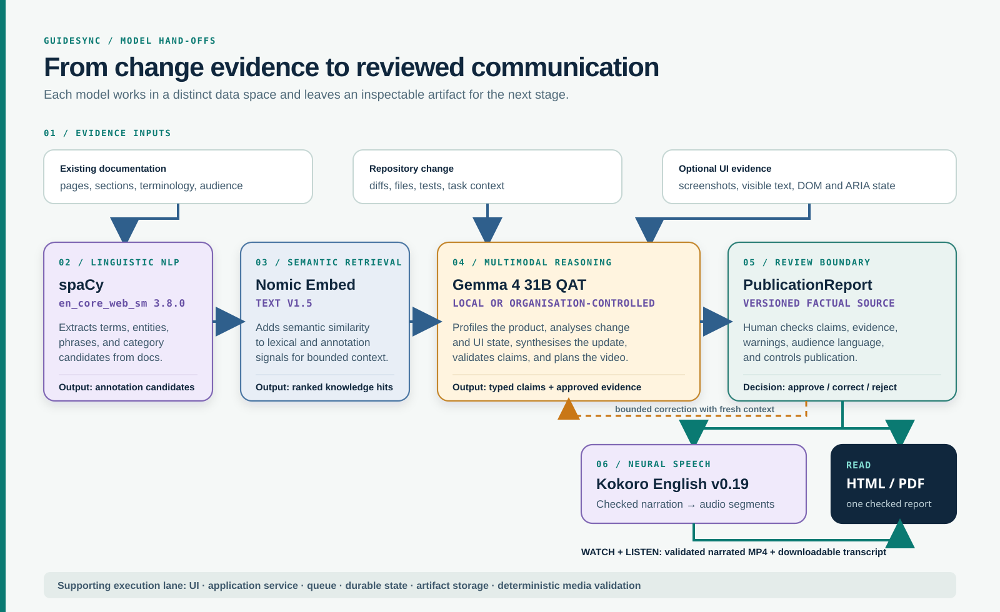
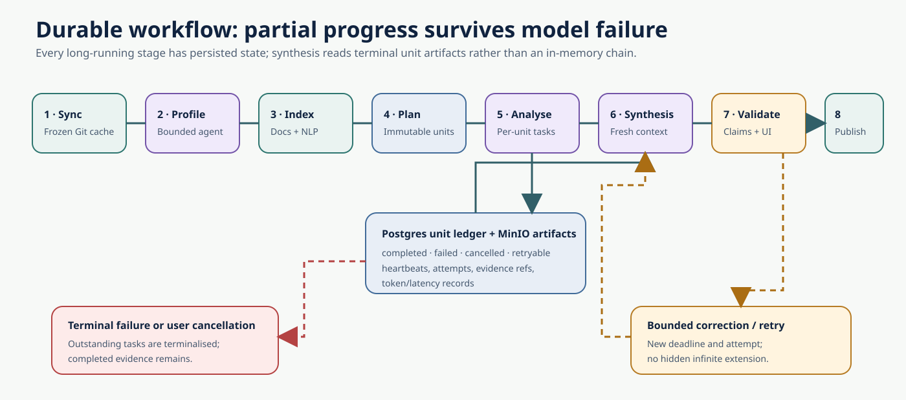
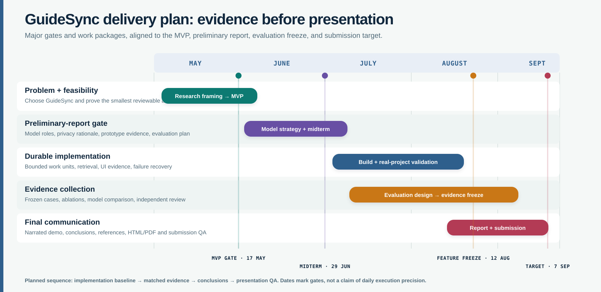
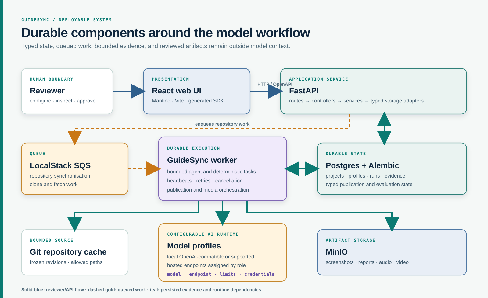
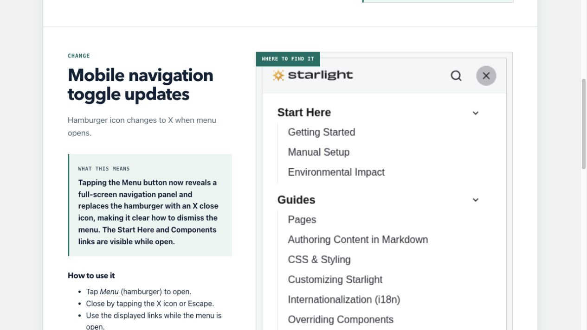
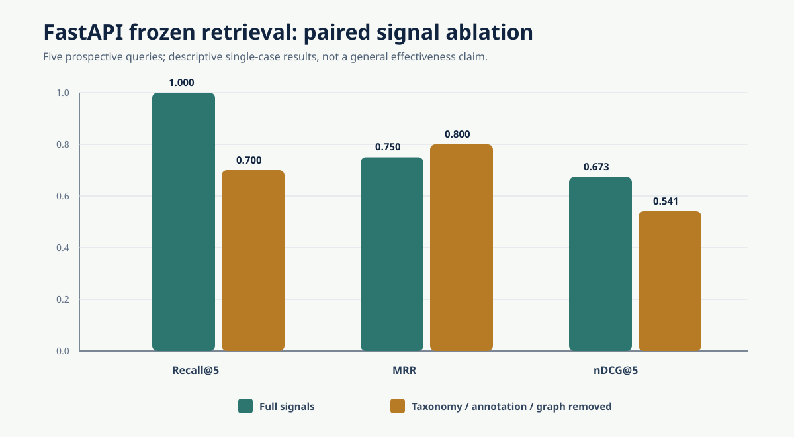
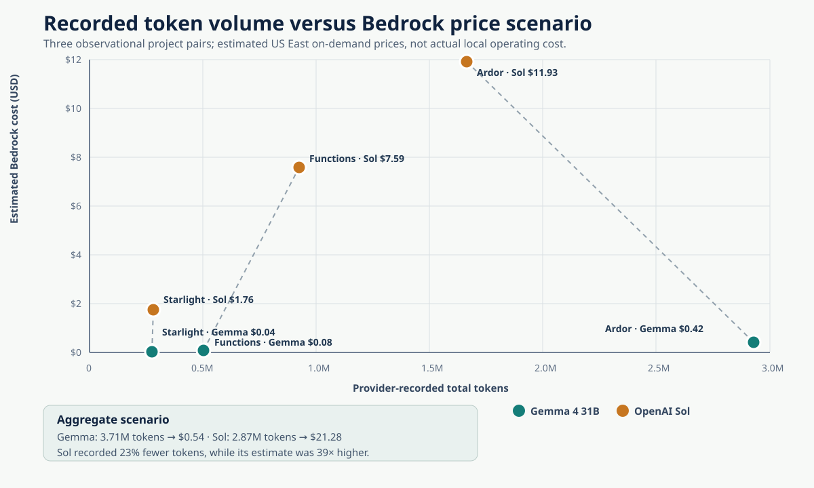
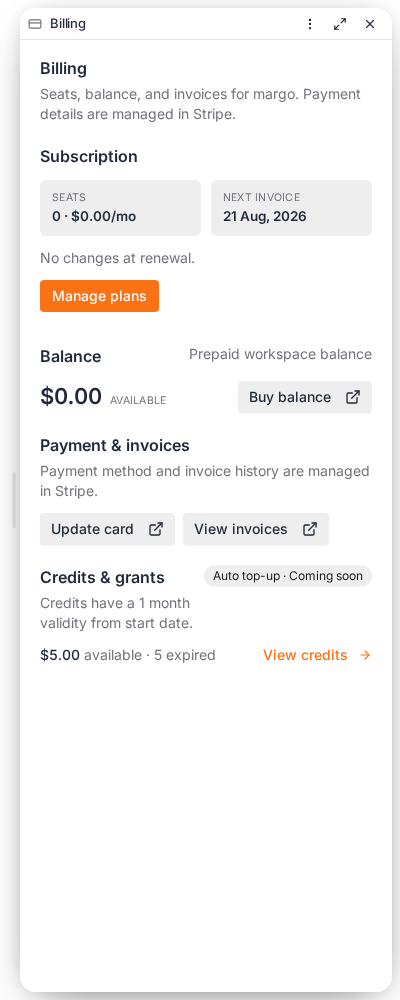
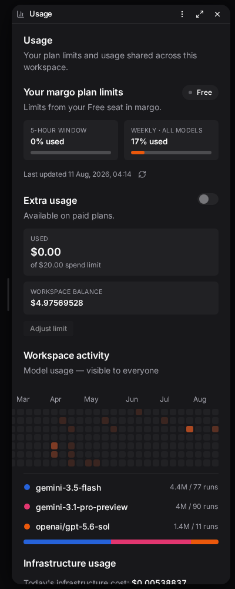

GuideSync Agent: An AI-Orchestrated Release Communication Assistant for Web Products
Module: CM3070 Computer Science Final Project
Project template: CM3020 Artificial Intelligence, Project Idea 1: Orchestrating AI models to achieve a goal
Code repository: github.com/mandrianova/guidesync_uol_final
Main-content word count: 7556/10500 words across six chapters. Abstract, headings, tables, figures, captions, references and appendices are excluded.
Abstract
Web-product teams must communicate user-facing changes while the supporting
evidence is scattered across source code, pull requests, existing guides, and
the visible interface. GuideSync transforms that evidence into a checked release
communication through a staged model-orchestration pipeline rather than a single
text-generation prompt. A pre-trained spaCy pipeline extracts linguistic
candidates from existing documentation; Nomic embeddings contribute a semantic
ranking signal; a locally served multimodal Gemma model profiles the project,
analyses repository and UI evidence, synthesises and validates the release
report, and plans an optional presentation; and Kokoro text-to-speech converts
checked narration into audio. Typed intermediate artifacts connect the stages
and preserve evidence for human review. An approved PublicationReport can be
read as an interactive report or PDF, or followed as a narrated video with a
downloadable transcript. External publication remains a human decision.
Evaluation combines leakage-controlled component diagnostics, current operational case studies, an observational model comparison, and stakeholder feedback. The historical frozen FastAPI pilot indexed all 148 eligible Markdown files and achieved Hit@5 of 1.000 over five queries, but two full local-model runs failed before producing a report. It therefore supplies retrieval and failure evidence rather than current end-to-end quality evidence. A UI-grounded Starlight case produced two accepted current-revision reports in 115 and 124 seconds, each with a publication-approved responsive screenshot. Because their run goals disclosed the expected behaviour, they demonstrate operational feasibility rather than unbiased comparative quality. Matched repeated conditions and adjudication remain incomplete. A separate observational comparison paired locally served Gemma and hosted OpenAI GPT-5.6 Sol release reports across three projects. Sol completed final synthesis 2.8-12.5 times faster and produced more specific reports; on the matched Starlight range, however, both models selected the same three public changes and their recorded token totals differed by only 2.6%. Nine stakeholders from two real-world project contexts also reviewed generated reports and video material. All nine rated report clarity, role usefulness, reduced need for clarification, editorial readiness, and adoption intention at 4 or 5 on a five-point scale. Video pace and synchronisation were rated strongly, while self-rated video comprehension was mixed (median 3). Because this was an author-led demonstration rather than independent use or a matched baseline study, the evidence supports feasibility, auditability, and perceived usefulness, but does not establish improved release-communication quality or reviewer effort.
Contents
- Chapter 1: Introduction (951/1000 words)
- 1.1 Problem and motivation
- 1.2 Project template and AI contribution
- 1.3 Aim, research question, and objectives
- 1.4 Scope and contribution
- Chapter 2: Literature Review (1083/2500 words)
- 2.1 Release communication and documentation context
- 2.2 Release-note generation and adjacent tools
- 2.3 Retrieval and repository-level generation
- 2.4 Agentic orchestration and tool use
- 2.5 UI grounding and multimodal evidence
- 2.6 Human review and trust
- 2.7 Research gap
- Chapter 3: Design (1375/2000 words)
- 3.1 Requirements and design principles
- 3.2 Model orchestration and hand-offs
- 3.3 Workflow and failure model
- 3.4 Model roles
- 3.5 Evidence and trust boundaries
- 3.6 Ethics, privacy, and accessibility
- 3.7 Project execution plan
- 3.8 Evaluation design
- Chapter 4: Implementation (1184/2500 words)
- 4.1 Supporting implementation boundary
- 4.2 Project profiling and documentation knowledge
- 4.3 Durable change analysis
- 4.4 Bounded agent runtime and tools
- 4.5 UI evidence, public reports, and narrated video
- 4.6 Engineering iteration and testing
- Chapter 5: Evaluation (2432/2500 words)
- 5.1 Evaluation questions
- 5.2 Software validation
- 5.3 FastAPI frozen pilot
- 5.4 Retrieval signal ablation
- 5.5 Full-run failure analysis
- 5.6 Starlight UI-grounded pilot
- 5.7 Observed Gemma-OpenAI GPT-5.6 Sol report comparison
- 5.8 Stakeholder evaluation
- 5.9 Critical discussion
- 5.10 Threats to validity
- Chapter 6: Conclusion (531/1000 words)
- References
- Appendix A: Ardor release report generated by local Gemma
- Ardor release notes
Chapter 1: Introduction (951/1000 words)
1.1 Problem and motivation
Modern web products change continuously. A release may rename a control, alter a permission rule, move a setting, or introduce a new validation requirement without causing a conventional software failure. Users and customer-facing teams still need a timely explanation of what changed, who is affected, and what to do next. Producing that explanation is difficult because the relevant evidence is distributed across repository history, issue or task context, existing documentation, and the running interface.
Release communication is therefore not only a summarisation problem. A maintainer must determine which delivered changes matter to users, recover the product terminology and workflow context, confirm the current visible behaviour, and write an explanation that does not expose irrelevant internal detail. Commit-based summaries can list merged work, workflow-capture tools can record a performed task, and visual regression can reveal pixel changes. None of these signals alone establishes what users should be told or which public claims are justified by the delivered change.
GuideSync addresses this gap. It starts from a defined repository change and builds a traceable path from source and documentation evidence to a proposed release communication. The intended output is a human-reviewable release report with evidence, warnings, model metadata, and optional validated screenshots; the same checked report may also become a PDF or narrated video. Direct editing of existing guides and automatic external publication are intentionally outside the implemented project scope and remain possible future extensions.
1.2 Project template and AI contribution
The project follows CM3020 Artificial Intelligence Project Idea 1,
Orchestrating AI models to achieve a goal. The template requires a coherent
software system containing at least three pre-trained model components rather
than disconnected demonstrations. GuideSync integrates four complementary
classes: a multimodal language model for reasoning across repository, text, and
UI evidence; an embedding model for semantic retrieval; a linguistic NLP
pipeline for annotation candidates; and a neural text-to-speech model for
narration. Gemma 4 is documented in [14]; the active implementations
are local google/gemma-4-31b-qat [15], Nomic Embed Text v1.5 [16], [17], spaCy
en_core_web_sm [18], and Kokoro English v0.19 [26]. Their roles and hand-offs
are shown in Chapter 3.
Google reports 30.7 billion parameters for the dense Gemma 4 31B model [33]. OpenAI publishes Sol's service limits and tariffs but not its parameter count; the comparison therefore uses observed output, latency, and price rather than an inferred model size [34].
As proposed in the preliminary report, functional development and regression testing use locally served Gemma first. Together with locally deployable Nomic, spaCy, and Kokoro components, this creates an organisation-controlled path in which repository files, documentation, screenshots, and narration do not need to leave the selected infrastructure boundary. This is a data-egress choice, not a claim that open-source software automatically guarantees security: access control, endpoint configuration, logging, and deployment practice still matter. Hosted OpenAI GPT-5.6 Sol is evaluated as an alternative implementation of the language-model reasoning and release-report synthesis role, not as a fifth model class. The completed observations cover report content, latency, and recorded token use; they do not establish that Sol replaces every local multimodal role under identical conditions. A matched Gemini condition remains future work [25]. Hosted APIs are therefore opt-in evaluation paths rather than mandatory production dependencies. The evaluation projects and their distinct purposes are introduced in Chapter 5 rather than used to define the project template.
Runtime traces include three Gemma screenshot-vision calls, 26 Nomic embedding calls, a completed Gemma profile, and spaCy/Nomic annotation records. A later four-role Gemma smoke test included screenshot OCR, and Gemma planned a validated video. These results demonstrate integration and runtime compatibility, not comparative quality. The frozen FastAPI ablation also measured zero ranking change from embeddings, so invocation alone is not evidence of causal benefit.
1.3 Aim, research question, and objectives
The project aim is to build and evaluate an auditable AI-orchestrated assistant that turns web-product changes into timely, evidence-grounded release communications for human review.
The research question is:
How effectively can an evidence-grounded, multi-model pipeline transform repository changes, existing documentation, and validated UI evidence into accurate, timely, and human-reviewable release communications?
The objectives retain the direction established in the preliminary report:
- integrate multiple pre-trained model classes into a coherent workflow that grounds release communication in product changes and existing knowledge;
- produce timely, understandable release reports, with an optional narrated presentation of the same checked facts;
- reduce avoidable manual consolidation and review effort compared with baseline artifacts, while retaining human publication control;
- make every proposed release communication reviewable and trustworthy through evidence, warnings, model metadata, intermediate artifacts, and explicit failure states;
- evaluate the multi-stage pipeline across frozen cases using component, end-to-end, and reviewer measures rather than fluency alone; and
- compare organisation-controlled open-source deployment with hosted API paths on quality, runtime, recorded token use, and data-boundary trade-offs.
1.4 Scope and contribution
The implementation targets public or approved repositories and public, no-authentication UI states. It supports repository synchronisation, project profiling, documentation indexing and retrieval, bounded change analysis, release-report generation, model-use records, and optional screenshot evidence. An approved publication report can also be transformed into a short narrated video with a downloadable narration transcript. This provides an alternative sequential, audio-visual route for people who prefer listening or need a concise entry point, while the transcript preserves a text alternative. The project does not claim an accessibility improvement without participant evidence, and it does not attempt model fine-tuning, universal framework support, direct editing of existing guides, or automatic publication.
The contribution is not a claim that LLM-generated release notes are reliable by default. It is a prototype and evaluation method for making release communication more inspectable: frozen inputs, durable work units, bounded tools, explicit failure states, claim-level evidence, and human review. Negative results are part of the contribution because they reveal where fluent model output and successful component metrics fail to produce a dependable end-to-end result.
Chapter 2: Literature Review (1083/2500 words)
2.1 Release communication and documentation context
Continuous development creates two linked problems: explanatory material can drift from the implementation, and users may not receive a timely account of delivered changes. Previous studies treat documentation as a continuous engineering activity under Agile, Lean, and DevOps practices [1] and identify missing or incorrect customer-facing documentation as an accumulating form of maintenance debt [2]. Release notes provide a narrower communication artifact: they connect a release to the changes that matter to its audiences.
GuideSync focuses on that release-communication task rather than directly rewriting every affected guide. Existing documentation remains important because it supplies project terminology, documented workflows, audience context, and baseline expectations that a code diff alone may not reveal. The research question is therefore whether change evidence and documentation knowledge can be combined into a more grounded release report; direct guide maintenance remains future work.
2.2 Release-note generation and adjacent tools
Automated release-note generation predates large language models. ARENA combines source-code changes with version-control and issue-tracker information [30], while GitHub can generate a draft overview from merged pull requests, contributors, labels, and a changelog [31]. More recent SmartNote work uses an LLM with code, commit, and pull-request details to produce personalised release notes for a target audience [32]. These approaches establish the value of automating change collection and summarisation. GuideSync investigates the additional role of existing-documentation retrieval, validated UI evidence, typed intermediate artifacts, and a human-controlled multi-format publication boundary.
Workflow-capture products such as Scribe, Tango, and Guidde demonstrate demand for rapid visual guide creation. Current vendor documentation describes browser capture of performed workflows, automatic step generation, screenshot editing, and shareable guide or video outputs [24]. Their starting point is normally the performed workflow, whereas GuideSync starts from a delivered software change and asks what users need to be told. This is a product-category comparison rather than an independent benchmark of vendor quality.
Browser automation and visual testing occupy a neighbouring space. Playwright can reproduce interactions and record screenshots, DOM state, ARIA snapshots, and traces [19]-[22]. Visual regression identifies appearance differences but does not decide whether the change creates a user-facing release-communication obligation. GuideSync therefore treats browser output as evidence within a larger decision, not as a sufficient trigger.
Table 1. Comparison of release-note and adjacent UI-evidence approaches against GuideSync's release-communication problem.
| Approach | Primary input | Typical output | Main limitation for GuideSync's problem |
|---|---|---|---|
| Conventional release-note generation | Commits, pull requests, labels, and issue metadata | Draft changelog or release overview | May omit existing documentation context, validated UI state, and claim-level evidence |
| Workflow capture | Human-performed UI task | New visual guide | Does not begin from a delivered repository change or decide what should be announced |
| Visual regression | Before/after screenshots | Pixel or DOM differences | Does not determine release relevance or explain user impact |
| Code documentation generation | Repository source | Comments or developer documentation | Targets code understanding rather than user workflows and release communication |
| General RAG writing | Query plus retrieved text | Grounded prose | Does not inherently freeze change scope, inspect UI state, or enforce publication evidence |
| GuideSync | Frozen change, existing docs, optional UI evidence | Reviewable release communication and evidence record | More operationally complex; quality depends on retrieval, models, and validation |
2.3 Retrieval and repository-level generation
Retrieval-augmented generation combines model parameters with external retrieved knowledge [3]. This is appropriate for release communication because existing guides and the current repository state change independently of the language model. A model should retrieve relevant pages on demand rather than depend on a large, stale prompt snapshot.
Repository-scale tools add a second relevant strand. RepoAgent demonstrates LLM-assisted repository-level code documentation [4], and SWE-agent shows that agent-computer interfaces can improve software-engineering task performance [13]. However, user-facing documentation differs from code comments. The target must be selected according to the affected user workflow, and internal evidence must be translated without leaking implementation terminology. This distinction motivates GuideSync's separate project profile, documentation knowledge base, change-analysis artifacts, and publication model.
Retrieval metrics also require care. Recall@k and nDCG can show whether useful pages are available to the generator, but they do not show that the model used them correctly. An embedding call is not evidence of semantic value unless a paired condition changes ranking or downstream quality. GuideSync therefore records retrieval, claim, and end-to-end measures separately.
nDCG is used because graded relevance should reward highly relevant material near the top while discounting later results [27]. BEIR further demonstrates why a retrieval claim should be tested across heterogeneous tasks and against lexical, dense, and re-ranking alternatives rather than inferred from one model call [28]. GuideSync applies the same comparative logic at a smaller case-study scale and reports query-level numerators before aggregation.
2.4 Agentic orchestration and tool use
ReAct interleaves model reasoning with external actions [5], while Toolformer examines model tool use [12]. These works support an agent that can inspect evidence as required instead of receiving every repository file in one prompt. The design lesson is nevertheless not that more agents are automatically better. Every tool loop creates new failure modes: excessive context, repeated calls, permission errors, malformed structured output, and non-terminating streams.
GuideSync consequently places control in the harness. Tools are typed, bounded, read-only, scoped to the current resource, and return structured errors as observations. Long work is represented by durable tasks rather than by keeping a single model session alive. This reflects an important distinction between model capability and workflow reliability: a model may produce useful partial analysis even when the overall run later fails.
2.5 UI grounding and multimodal evidence
ScreenAI, SeeClick, WebVoyager, Ferret-UI, OmniParser, and VisualWebBench show active research into screenshot understanding, GUI grounding, and web-agent evaluation [6]-[11]. Together they indicate that visual interface evidence is a specialised data space with problems that cannot be reduced to ordinary text generation. Models must identify controls, states, and relationships between visible elements, while benchmarks must account for action success and grounding accuracy.
Screenshot-only reasoning remains unsafe for documentation. An image may show the wrong route, an authentication failure, an unloaded component, or a state unrelated to the changed behaviour. GuideSync therefore combines semantic browser actions, DOM/ARIA observations, version identity, raw and prepared images, and model-backed semantic validation. Deliberately wrong-page and blank cases are included in the Starlight protocol to measure false confidence rather than only successful captures.
2.6 Human review and trust
The project assumes a human reviewer because evidence-grounded generation can still make unsupported claims. Useful reviewability requires more than a generic warning that AI may be wrong. The reviewer needs atomic claims, evidence references, target documents, validation findings, and visible uncertainty. A systematic review of appropriate reliance in human-AI decision making describes reliance as a socio-technical problem shaped by system, person, task, and context factors rather than by confidence displays alone [23]. This supports GuideSync's combination of traceable evidence, explicit limitations, and human publication control, although release-communication review remains an application-specific case.
The design also separates the internal technical report from the public report. The latter should explain user-visible changes in ordinary language; the former may retain file paths, transcripts, token usage, and rejected evidence. This separation prevents auditability from making the public artifact unreadable.
2.7 Research gap
Previous work covers release-note generation, documentation debt, retrieval, repository-scale agents, workflow capture, visual testing, and GUI understanding. The gap addressed by GuideSync is their integration for change-triggered, evidence-grounded release communication across text, UI, and audio-visual outputs. The research problem is not simply generation but causal evidence use: whether repository, documentation-knowledge, and UI signals change the quality and review effort of a proposed communication. GuideSync contributes a working prototype and a frozen evaluation protocol for that question. Its current dataset is too small for general claims, so the report treats the work as a case-based feasibility and failure analysis.
Chapter 3: Design (1375/2000 words)
3.1 Requirements and design principles
The functional requirements are to save a project, synchronise its repositories, construct a profile and documentation index, analyse a bounded change, retrieve relevant material, optionally inspect UI evidence, and generate a reviewable report or narrated video artifact. Non-functional requirements include reproducibility, bounded model work, evidence traceability, privacy, explicit failure states, and human control over publication.
Four principles guide the design. First, repository and browser content are untrusted data rather than instructions. Second, durable workflow state belongs outside the model context. Third, every user-facing claim should be traceable to evidence or rejected. Fourth, model roles should be independently configurable and observable so that ablations are possible.

Figure 1. GuideSync model-orchestration pipeline. Four pre-trained components operate on different data spaces and exchange typed evidence before a human controls publication. The lower lane shows supporting execution boundaries without treating infrastructure as an AI contribution.
3.2 Model orchestration and hand-offs
GuideSync is organised around intermediate evidence rather than around a single prompt. Repository changes, existing documentation, project context, and optional UI captures enter the pipeline as independently inspectable sources. spaCy produces high-recall terms, entities, and phrase candidates; Nomic adds a semantic ranking signal to bounded retrieval; Gemma consumes the resulting profile, retrieved material, diff evidence, and validated UI state to classify user impact and synthesise the proposed release communication. Validation returns unsupported or incomplete claims for bounded correction rather than silently publishing them.
The checked PublicationReport is the factual boundary for all presentation
formats. Gemma may convert that report into a typed slide and narration plan,
but it cannot introduce a second source of facts. Kokoro then converts only the
checked narration text into speech segments. The interactive report, PDF,
video, and transcript therefore share one evidence trail, and the human reviewer
can inspect or reject the result before publication.
The UI, application service, queue, durable state store, and artifact store support those hand-offs. Their purpose is to keep model work bounded, resumable, and observable when a call fails or takes many minutes; the specific technology choices are described once in Chapter 4 rather than presented as the research contribution.
3.3 Workflow and failure model
The normal lifecycle is repository synchronisation, project profiling, knowledge indexing, deterministic change planning, persisted analysis units, fresh synthesis, validation, and publication-report creation. Missing prerequisites are inserted before analysis. Each analysis unit stores its status and artifact independently; synthesis begins only after required units reach terminal states.
This design was introduced after a sequential FastAPI run lost the ability to make progress when its fifth local-model call did not terminate. A simple timeout increase would not solve lost partial work or ambiguous state. The revised design enforces request and total deadlines, retry limits, per-profile concurrency, heartbeats, cancellation, structured terminal errors, and partial artifact persistence.

Figure 2. Durable workflow and failure model. Analysis units persist independently; terminal outcomes feed fresh synthesis, while cancellation and failure remain explicit rather than being converted into empty scores.
3.4 Model roles
Table 2. Active model components, bounded data spaces, final roles, and observed runtime evidence.
| Component | Input/data space | Final status and role | Runtime evidence |
|---|---|---|---|
google/gemma-4-31b-qat (evaluated local baseline) |
Repository files, diff windows, knowledge hits, screenshots, and publication reports | Active orchestration, project profiling, code-change analysis, screenshot validation, and video planning | Completed profile, three accepted-run screenshot-vision calls, four-role live smoke including vision, and completed video-planning transcript |
| Nomic Embed Text v1.5 | Documentation and query text | Semantic ranking signal | 26 accepted-run calls; paired FastAPI ranking contribution was zero |
spaCy en_core_web_sm 3.8.0 |
Documentation text | Terms, entities, phrases, and annotation candidates | 40 completed page/section annotation records in the inspected corpus |
| Kokoro English v0.19 | Checked narration text from a typed video plan | Active neural text-to-speech model through the pinned sherpa-onnx runtime | Six narration segments in the completed 28.270-second Starlight video; model, voice, duration, and hashes persisted in the manifest |
The table distinguishes models from deterministic tools. Playwright, Postgres, MinIO, SQS, and Git are essential software components but are not pre-trained models. Call counts show that the components were invoked; only a matched quality or ranking comparison can establish causal benefit.
Gemma is the evaluated local baseline rather than a fixed product dependency. Generative roles resolve through model profiles saved in Postgres, so an administrator can assign supported local OpenAI-compatible or hosted provider profiles by role without changing the workflow code. Model identifier, endpoint, credentials, concurrency, and execution limits remain configuration. This lets an organisation choose according to capability, data-egress policy, latency, availability, and price. The implementation claims interchangeability through its tested profile contracts, not universal compatibility with every model or provider API.
The implementation and evaluation order is deliberate. GuideSync functionality is built and regression-tested against the self-hosted Gemma profile first. The resulting workflow is then frozen before replays through selected hosted API profiles. OpenAI GPT-5.6 Sol implements the same language-model reasoning and synthesis role for the observational comparison in Section 5.7; it is not counted as an additional model class or assumed to replace Gemma's full multimodal role. Repeated blind scoring and a Gemini condition remain future work. Holding inputs, evidence bundles, prompts, tool contracts, and review rubrics fixed reduces the risk of attributing application changes to the model path. The comparison uses recorded input and output tokens rather than monetary cost because the local endpoint has no equivalent per-token charge. This preserves the preliminary-report rationale: Gemma is the organisation-controlled operating path, while hosted APIs estimate an attainable quality difference and are not assumed to be the only production route.
A pipeline from repository change, documentation and user interface evidence through project context, retrieval, change analysis and a typed publication report. A human review gate leads to an interactive web report, print PDF, or narrated MP4. Gemma, Nomic, spaCy and Kokoro contribute at distinct stages.
GuideSync / capability map
One evidence trail.
Three review formats.
A code change becomes a typed, human-reviewed publication source before it branches into an interactive report, printable document, or narrated video.
Evidence engine
durable / bounded / typedUnderstand the project
Profile architecture, audience, and documentation areas.
- Freeze source evidence
- Derive project profile
Find relevant guidance
Annotate and rank the documentation corpus.
- Index existing pages
- Retrieve bounded context
Analyse change + UI
Connect code evidence, claims, and validated interface state.
- Persist analysis units
- Approve visual evidence
Synthesise + validate
Create one versioned report from approved evidence.
- Check typed claims
- Persist review decisions
Responsive change stories, evidence, and video controls.
A stable document for review, sharing, and archival.
An alternative sequential route through the same reviewed release information, with a downloadable transcript.
→ validated MP4 + transcript
Figure 3. GuideSync evidence-to-multiformat publication pipeline. A single
typed and reviewed PublicationReport feeds the interactive and print outputs
or an optional narrated-video branch. Gemma prepares a bounded presentation
plan and Kokoro voices only the checked narration; deterministic rendering and
media validation cannot introduce new claims.
3.5 Evidence and trust boundaries
Repository reads are restricted to allowed roots and bounded windows. Secret-like paths, hidden Git state, oversized blobs, and pathspec tricks are rejected. Browser tools permit public same-origin navigation and semantic interactions but reject credential entry, arbitrary scripts, raw selectors, and cross-origin navigation. Screenshot attempts retain requested and observed state, DOM/ARIA hashes, validation findings, and distinct raw and prepared artifact references. Only validation-passed prepared images can appear in a public report.
Model-facing outputs use shallow typed schemas. Complete transcripts are kept in sanitised internal event records rather than embedded into the public report. The publication contract is rendered by React, and the generated document remains a draft for human review.
3.6 Ethics, privacy, and accessibility
Evaluation uses public repositories, frozen fixtures, and public no-auth UI states. Private customer records and production screenshots are excluded. A deployment processing commercial source code would need organisation-controlled model endpoints or explicit permission for hosted APIs. Tokens, cookies, and credentials are excluded or redacted from model-facing transcripts. Project-specific runtime records are not hard-coded into the application: projects and non-secret settings are created dynamically and persisted in Postgres, generated artifacts are stored in MinIO, and bounded repository checkouts use an operational cache. Model and UI credentials are stored separately from public reports and run snapshots.
Screenshot publication has an additional privacy boundary. The capture agent may crop irrelevant regions or replace a selected rectangle with opaque pixels; the derivative retains source and result hashes plus an edit manifest, loses any previous approval, and must pass a fresh publication review. Only finalised, privacy-prepared images may appear in the public report. This process supports removal of observed personal or secret-bearing regions, but it is a controlled review workflow rather than a claim of universal automatic PII detection.
The user study is restricted to consenting adults and collects minimal, anonymised data. Generated release communication is labelled as a review artifact. Accessibility considerations include readable contrast, responsive report layout, semantic controls, keyboard-operable browser UI, descriptive screenshot text, print/PDF output, and narrated video with a downloadable transcript. The audio-visual format provides an alternative sequential route through the same reviewed information, but it is not treated as proof of improved accessibility or comprehension. No formal accessibility audit or controlled comprehension comparison was completed, so these remain design provisions rather than measured accessibility outcomes.
3.7 Project execution plan
The work plan is organised around assessable gates and iterative real-project validation rather than a reconstructed daily change history. The May MVP tested the smallest release-communication path on a live startup and followed it through to a usable release artifact. The 29 June preliminary-report gate fixed the multi-model direction, model-selection rationale, and initial evaluation plan. The active build then generalised the prototype into configurable projects, repository connections, model-role profiles, and durable runs so that evaluation was not tied to one product.
Public FastAPI and Starlight cases were introduced next to challenge different parts of the system with reproducible repositories: documentation-rich retrieval and UI-grounded change evidence respectively. Their failures and partial results were retained and used to revise retrieval, bounded execution, screenshot review, and publication contracts. The final applied pass returned to a startup product and added a corporate integration repository, producing Ardor and Functions reports for review by nine potential users. This sequence does not create a controlled cross-project benchmark, but it shows deliberate movement from one live MVP context to a configurable multi-project system and back to practical stakeholder use.
The remaining planned work keeps evidence ahead of presentation: matched model and UI conditions, independent labels, and the adult review study precede the evaluation freeze; only then are conclusions, figures, references, HTML/PDF, and submission checks finalised. This sequencing prevents late interface polish from displacing the evidence needed to answer the research question.
Table 3. Milestone status, principal delivery risks, and the iteration or scope decision used to protect the evidence boundary.
| Gate and current status | Principal risk | Iteration, contingency, or scope decision |
|---|---|---|
| Live-startup MVP and preliminary-report gate — complete | An over-broad concept could consume time without producing assessable evidence | Follow the smallest pipeline to a real release artifact, freeze six objectives, and require each later feature or evaluation item to support one of them |
| Configurable multi-project implementation and feature freeze — complete | Slow or non-terminating model/browser work could erase partial progress | Deliver saved projects and model profiles, resumable analysis, typed publication reports, reviewed screenshots, PDF, and optional narrated video; persist bounded tasks and failures under total budgets |
| Retrieval, UI, and provider comparisons — partial | Leakage, mismatched sources, or one favourable run could be mistaken for model quality | Freeze manifests and labels prospectively; report demonstrations and confounded pairs descriptively; leave unmatched results incomplete |
| Applied startup, public-repository, and corporate iteration — exploratory complete | Repeated tuning to one favourable project could be mistaken for generality | Use Ardor, FastAPI, Starlight, and Functions for distinct purposes; turn observed defects into regressions; report stakeholder ratings as perceived value rather than causal benefit |
| Evidence freeze and submission QA — pending | Small, heterogeneous, and partly abstract change sets may produce inconclusive results and make completeness or accuracy difficult to judge | Preserve inconclusive outcomes as limitations; triangulate repository evidence, independent review, and stakeholder feedback; run automated audits, then inspect the final PDF page by page |

Figure 4. Milestone-aligned delivery plan. The plan connects the initial MVP, preliminary-report gate, durable implementation and evaluation design, final feature freeze, evidence collection, and submission QA. It records major work packages rather than claiming a precise day-by-day reconstruction.
3.8 Evaluation design
Evaluation separates component quality, operational success, and end-to-end release-communication quality. Frozen case manifests record source revisions, permitted and withheld paths, prompts, model settings, gold labels, and checksums. Prospective annotation is completed before model outputs are viewed. Full and ablated conditions share identical inputs, and repeated stochastic runs are averaged within each case before any cross-case aggregation.
Table 4. Evaluation measures, operational definitions, and the reason each is retained rather than collapsed into a single quality score.
| Measure group | Operational definition in this project | Rationale or precedent |
|---|---|---|
| Acquisition coverage | Eligible or supported items successfully acquired divided by the frozen denominator | Detects silent corpus omissions before model quality is discussed |
| Annotation precision, recall, and F1 | Correct candidates divided by predicted candidates; recovered gold candidates divided by gold candidates; harmonic mean | Separates over-generation from missed terminology in the spaCy candidate stage |
| Hit@k, MRR, and nDCG | Presence of a relevant item by rank k; reciprocal rank of the first relevant item; discounted graded relevance relative to the ideal ranking | Measures availability, first-result quality, and graded ordering separately; nDCG follows [27], while heterogeneous lexical/dense comparison follows [28] |
| Obligation and claim quality | Strict weighted obligations satisfied; supported atomic claims divided by generated claims; citations checked for entailment | Prevents fluent partial reports from passing; atomic citation quality follows the reproducible evidence-evaluation direction of ALCE [29] |
| UI grounding | Required visual facts supported, screenshot relevance, and false-confidence rate on deliberately wrong or blank states | Treats screenshots as specialised grounded evidence rather than decoration [6]-[11] |
| Operational and reviewer measures | Wall time, final-synthesis time, tokens, retries, terminal status, reviewer time, edits, and bounded rating items | Separates runtime feasibility and perceived usefulness from factual quality or measured effort saving |
Every result retains its numerator, denominator, condition, and terminal status.
Missing downstream stages remain not_evaluated; a failed generator is not
converted into a zero-quality generated document.
Chapter 4: Implementation (1184/2500 words)
4.1 Supporting implementation boundary
The submitted implementation is the active GuideSync application. An earlier MVP is referenced only as a development milestone and is not part of the code submission. Users interact through a UI, an application service validates typed requests, a worker executes queued model tasks, durable state records every stage, and an artifact service stores screenshots, reports, audio, and video. This separation lets a reviewer observe progress and resume or cancel long-running work without placing workflow state inside a model context.
The concrete implementation uses Python 3.14, FastAPI, Pydantic AI, SQLAlchemy and Alembic on the server side; React, Mantine and Vite for the UI; Postgres for typed state; MinIO for artifacts; LocalStack SQS for repository synchronisation; and Docker Compose for the reproducible runtime. These technologies implement the model hand-offs in Figure 1; they are not counted as AI components.

Figure 5. High-level implementation components. The React UI calls the FastAPI application; API and worker share typed Postgres state, queued repository synchronisation uses SQS, and the worker accesses bounded repository checkouts, configured model endpoints, and MinIO artifacts. The diagram distinguishes deployable infrastructure from the model-orchestration contribution in Figure 1.
4.2 Project profiling and documentation knowledge
A saved project records repositories, branches, bounded analysis paths, documentation roots, audience, instructions, interface URL, and model-role profiles. Repository synchronisation prepares a shared Git cache. The profiling agent can list, search, and read bounded repository files to derive a compact project summary, architecture, concepts, and user-facing documentation categories. Evidence references record which files support profile claims.
The knowledge pipeline indexes supported documentation at a frozen commit. It stores documents, sections, chunks, annotations, concepts, taxonomy matches, and graph edges in Postgres. Full source bodies are read from the indexed repository rather than duplicated in profile metadata. Linguistic annotation uses spaCy, while lexical and optional embedding signals contribute to ranking. Keyphrase candidates are lexically shortlisted before semantic ranking to bound embedding work.
4.3 Durable change analysis
An analysis request defines explicit repository commit bounds or branch/date ranges. The planner resolves actual Git chronology and ancestry rather than using relevance ranking as history. It applies project path filters and builds a deterministic manifest of cohesive work units. Related implementation and test files can be grouped, avoiding one expensive model run for every changed file.
Each unit receives bounded diff windows, file windows, project-profile context, and knowledge hits. It runs as an independently persisted workflow task and writes its result immediately. A failed unit can therefore leave preceding analysis available for inspection. A fresh synthesis model receives a compact manifest and can list or read artifacts on demand instead of receiving all analysis bodies in one prompt.
This mechanism is a major change from the failed FastAPI pilot's sequential critical path. It also supports cancellation: unfinished tasks, transcripts, and the parent run are terminalised consistently while completed artifacts are preserved.
4.4 Bounded agent runtime and tools
GuideSync uses one shared Pydantic AI-compatible runtime rather than parallel home-grown agent loops. Model profiles contain concurrency and request settings. The runtime enforces output-token limits, request deadlines, total deadlines, tool-call and retry budgets, context compaction, structured output validation, and per-profile concurrency. Provider usage and local estimates are recorded in a model-call ledger, while sanitised model and tool events remain inspectable during a run.
Tools expose a virtual read-only repository filesystem, raw diff reads, project profile access, knowledge search, artifact reads, and bounded browser evidence. The policy wrapper validates arguments, permission, resource scope, timeout, output limits, and retry expectations. Denials and errors are returned to the model as structured observations rather than being hidden.
Local OpenAI-compatible streaming exposed a subtle termination problem. A schema-valid final output could arrive before the provider closed its SSE stream, or the final marker could precede the complete output-tool payload. The runtime was changed to retain output-tool state, tolerate incomplete JSON, and stop when the matched payload becomes schema-valid. Final evidence checks still run after early termination, and a rejected draft enters a bounded correction attempt under the same total budget. Two accepted Starlight runs on the frozen revision exercised this post-fix path through analysis, synthesis, validation, publication, and prepared-image promotion.
4.5 UI evidence, public reports, and narrated video
Screenshot discovery is agent-driven. For a screenshot-enabled run, the synthesis agent first inspects the configured public UI through semantic browser actions. Captures record the route, viewport, theme, requested control, observed state, screenshot, DOM/ARIA hashes, and policy audit. A semantic validator checks whether the capture supports the associated change. Duplicate same-route/same-viewport inspections and captures are rejected unless the model changes the grounded scenario.
Before approval, deterministic image tools can crop a capture, draw an outline highlight, or replace a normalised rectangular region with opaque pixels. Each derivative stores source and result hashes plus an operation manifest. Edited images lose approval until the agent inspects the derivative and explicitly finalises publication review; the original remains internal evidence.
Public reports are typed data rendered by React rather than a second backend HTML template. The public view presents user-facing summary, change cards, instructions, and approved screenshot galleries. Internal paths, transcripts, token details, and rejected attempts remain technical artifacts. Print styles support a browser-generated PDF without splitting evidence from captions.
Video generation is an optional, separately queued publication stage rather
than an unbounded side effect of report generation. Gemma converts the persisted
PublicationReport into a typed three-to-six-slide plan whose narration and
claim identifiers must refer to existing report data. React-owned HTML renders
the 1280 x 720 slides and may use only prepared, publication-approved
screenshots. The pinned Kokoro English v0.19 model produces one checked WAV
segment per slide through sherpa-onnx; FFmpeg combines the slides and narration,
and ffprobe rejects output without exactly one H.264 video stream, one AAC audio
stream, the expected dimensions, and a bounded duration. The MP4, manifest, and
plain-text narration transcript are stored as report artifacts.

Figure 6. Public Starlight report from accepted run
project-65c9dc6f88-d181dad1. The narrow report renders the user-facing change,
instructions, and publication-approved mobile screenshot; technical traces and
rejected evidence remain outside the public artifact.
4.6 Engineering iteration and testing
Real-project validation found defects that unit tests alone had missed. Date-only ranges inherited the current time of day; relevance-ranked evidence was reused as chronology; project path filters were not applied at the final diff boundary; historical reads used the current checkout; an eager screenshot planner encoded fixture expectations; nested model concurrency deadlocked; workflow creation raced a legacy queue; and valid structured output remained trapped in open streams. Unsupported generated claims included invented custom-icon support and qualitative improvements not entailed by moved code.
Each observed failure was preserved, fixed at the relevant boundary, and turned
into a regression. Dead compatibility paths, file artifact storage, a duplicate
rendering path, and the obsolete screenshot planner were removed rather than
retained. At final implementation commit 1589010, the authoritative Compose
gate passed configuration resolution, Ruff, type checking, 454 deterministic
backend tests (with one explicitly deselected live test and one non-failing
warning), 14 frontend tests, and the production frontend build. The build kept
an existing large-chunk warning, and dependency installation reported one
low-severity frontend vulnerability; these are retained as limitations rather
than hidden by the passing gate.
The technical challenge was therefore not merely invoking four pre-trained models. It was maintaining a bounded, typed, reproducible evidence chain across Git history, retrieval, long-running model streams, browser state, image approval, durable retries, and multi-format publication. The observed checkout, concurrency, queue, stream-termination, unsupported-claim, and screenshot-policy failures provide concrete evidence of that depth; Sections 4.3-4.5 explain the corresponding design boundaries rather than treating implementation size as a proxy for difficulty.
This testing evidence demonstrates software-engineering depth but must not be confused with release-communication quality. Unit tests can show that a failed model call is recorded correctly; they cannot show that the resulting prose is useful to its intended audience or reviewer.
Chapter 5: Evaluation (2432/2500 words)
5.1 Evaluation questions
The evaluation asks five linked questions:
- Can GuideSync reproducibly acquire and index the intended evidence?
- Do NLP, graph, embedding, and UI signals improve relevant component metrics?
- With inputs and tool contracts held fixed, how do the self-hosted Gemma and hosted API paths differ in output quality, latency, and recorded token use?
- Can the complete workflow produce accurate, sufficiently complete, and traceable release communication without unsupported claims?
- Does a reviewer find the result clearer, more useful, and less costly to review than baseline artifacts?
The current evidence answers the first question partially and the third descriptively, while exposing important limitations for the others. Results are therefore reported by stage rather than collapsed into one success score.
Section 5.7 reports the completed observational Gemma-Sol comparison. Monetary cost is not used as a shared metric because the local Gemma endpoint has no per-token charge. Repeated blind scoring on identical frozen inputs and a hosted Gemini condition were not completed, so this remains a descriptive provider comparison rather than a provider-family benchmark.
5.2 Software validation
The application has Compose-backed lint, type, backend test, frontend test,
build, configuration, and real MinIO gates. Frozen real-project runs exercise
repository synchronisation, profiles, the full knowledge index, change analysis,
browser capture, publication artifacts, and cancellation. At commit 1589010,
the authoritative gate passed Compose configuration, Ruff, type checking, 454
backend tests, 14 frontend tests, and a production build. One live backend test
was explicitly deselected; one backend warning, one large-chunk warning, and one
low-severity frontend dependency finding remain disclosed.
Frontend behavioural coverage remains much smaller than backend coverage. CI is also absent. These are reproducibility limitations, although deterministic local Compose checks are documented.
5.3 FastAPI frozen pilot
FastAPI is a mature public Python web framework with an extensive documentation corpus in its public source repository [36]. This makes it useful for separating code-change evidence from the additional context supplied by a knowledge base. PR #15022 was transformed into a leakage-controlled code-only change. The historical gold set is single-annotator and therefore provisional. Component results are retained with numerators and denominators.
Table 5. Frozen FastAPI component outcomes and their bounded interpretation.
| Stage | Operational outcome | Intrinsic result | Interpretation |
|---|---|---|---|
| Frozen source scale | Synthetic head: 2,889 tracked files (31.74 MiB); configured scope: 625 files (4.30 MiB) | One commit; 13 changed paths; +811/−71 lines | A documentation-rich repository with a deliberately narrow, leakage-controlled experimental diff |
| Project profile | Completed; 2/7 referenced areas were read | Claim precision 6/8 = 0.750; fact recall 4/4 = 1.000; evidence coverage 5/8 = 0.625; critical-path coverage 2/5 = 0.400 | Broadly complete, but several claims had shallow evidence |
| Knowledge corpus | 148/148 eligible and 148/149 supported Markdown files indexed | Coverage 1.000 eligible and 0.993 supported | The corpus did not silently omit eligible documents; one oversized page was excluded |
| NLP annotation | Ten page-and-kind samples | Precision 27/96 = 0.281; recall 27/29 = 0.931; F1 = 0.432 | Recall-heavy over-generation; suitable as a ranking signal, not authoritative metadata |
| Retrieval | Five frozen queries | Hit@1 3/5 = 0.600; Hit@5 5/5 = 1.000; MRR 0.750; nDCG@5 0.673 | Relevant pages appeared by rank five; rank-one and path diversity remained weak |
The retrieval sample belongs to one narrowly frozen FastAPI streaming-response
change. Its five information needs cover generator streaming, raw bytes or image
responses, response-model validation, custom media types in OpenAPI, and JSON
Lines. Each query has graded relevant paths in the frozen GOLD_LABELS record;
the reported Hit@k, reciprocal rank, nDCG@5, and unique-path diversity are
calculated against those labels. The paired ablation reuses the same indexed
revision, chunks, queries, candidate limit, and relevance judgements, changing
only the ranking signals under test. This controls the comparison within the
case but does not create five independent projects or time periods.
The results illustrate why component metrics must remain separate. Complete corpus coverage did not imply precise annotation, and successful retrieval did not imply a completed documentation update.
5.4 Retrieval signal ablation
A paired condition removed taxonomy, annotation, and graph ranking signals while retaining documents, chunks, queries, and embedding configuration. Mean Recall@5 fell from 1.000 to 0.700 and nDCG@5 from 0.673 to 0.541, while MRR rose from 0.750 to 0.800. The richer signals improved coverage and graded relevance but sometimes promoted a poorer first result.
The lexical-plus-embedding ranking was identical to lexical ranking, with zero recorded embedding contribution. The defensible conclusion is not that embeddings are generally useless. It is that the selected embedding step did not affect this frozen snapshot. Possible explanations include weak score calibration, lexical dominance, small query count, or unsuitable chunks. A larger matched evaluation is required before the component can be claimed to improve the workflow.
The planned expansion is stratified rather than a larger convenience list: at
least three frozen periods with 8-10 prospective queries each, covering concept,
workflow, API-behaviour, and exact-reference information needs, followed where
feasible by a second repository. Query wording and relevance labels are frozen
before ranking output is inspected. Two reviewers independently label the
critical subset, report agreement, and adjudicate conflicts. Results are first
reported per period and query type, then aggregated with numerators,
denominators, and uncertainty; failed acquisitions remain not_evaluated.
That expansion and its independent adjudication were not completed; the current
figure therefore remains a one-case descriptive pilot.

Figure 7. Paired FastAPI retrieval results for five frozen queries. These are one-case descriptive results: richer signals improved Recall@5 and nDCG@5, reduced MRR, and the embedding signal caused no ranking change.
5.5 Full-run failure analysis
Both preserved full local-Gemma runs failed before generating a document. The
current retry completed four of thirteen file analyses; the fifth provider call
terminated after 636.296 seconds. The run recorded 381,156 tokens as a lower
bound because the failed call was not fully ledgered. Change-analysis completion
was 4/13. Planning, generation, validation, and post-edit indexing were
not_evaluated.
Strict weighted obligation completeness is 0/14 because no documentation output was produced. Atomic claim precision and citation precision are undefined, not zero: there were no claims to assess. This distinction prevents an operational failure from being misreported as evidence about text quality.
The failure motivated the durable work-unit architecture in Chapters 3 and 4. It remains historical diagnostic and component evidence, not evidence of final-system success. A first current-harness Sol pair completed: KB-enabled and disabled runs took 163.5 and 164.2 seconds. The no-KB report used 9.52% fewer tokens but needed one semantic correction and cost an estimated USD 0.7062 versus USD 0.6871 under frozen rates [35]. The KB run read two documents but cited none, so repetition 1 does not demonstrate causal benefit. Blind scoring and two repetitions remain incomplete.
5.6 Starlight UI-grounded pilot
Starlight PR #2727 in the public withastro/starlight repository [37] provides a
small UI change with frozen source and before/after evidence for open and closed
mobile-menu states in light and dark themes. The case includes a synthetic
code-only head to prevent leakage from the maintainer's textual description.
DOM, ARIA, and PNG artifacts are checksummed.
The planned conditions are G-S (no screenshot or DOM evidence), G-SD (DOM
without screenshot), and G (full evidence). Each stochastic condition requires
at least three matched repetitions.
Two frozen-revision runs reached accepted publication state on 12 August 2026:
Table 6. Accepted current-revision Starlight operational runs. These are demonstrations, not matched quality observations.
| Run | Change range | Elapsed | Approved responsive evidence |
|---|---|---|---|
project-65c9dc6f88-16b735b8 |
Starlight mobile navigation change | 115 s | 1440 x 1000 prepared screenshot |
project-65c9dc6f88-d181dad1 |
Starlight mobile navigation change | 124 s | 390 x 844 prepared screenshot |
Both reports persisted typed PublicationReport data, one evidence-grounded
change, and an approved image. This removes the earlier operational blocker:
the final architecture can complete repository analysis, UI inspection,
validation, and publication. It does not complete the research comparison.
The run goals disclosed the expected mobile-menu behaviour, so the outputs are
demonstrations rather than blind or matched observations. Prospective gold
annotation, repeated condition runs, blind claim review, and adjudication remain
incomplete; the two accepted outputs are not cherry-picked as a quality score.
After restoring Gemma to all generative roles, a manually requested video for
project-65c9dc6f88-d181dad1 completed on the first new attempt. The persisted
Gemma planner transcript ran from 13:27:03 to 13:27:37 UTC; the complete worker
task took 49 seconds and produced six 1280 x 720 slides plus a 28.270-second
H.264/AAC MP4 using Kokoro bm_lewis narration. The artifact was served with
HTTP 200 and independently probed for video and audio streams. This is bounded
operational evidence for the optional publication stage, not a user-rated
measure of presentation quality.
The planned matched comparison was not completed: independent annotations, agreement and adjudication, repeated condition outcomes, visual-fact and obligation scores, false-confidence negatives, and paired latency remain future work. Figure 6 therefore shows the selected accepted capture rather than an eight-state comparison matrix.
5.7 Observed Gemma-OpenAI GPT-5.6 Sol report comparison
Cases differ in scale. Ardor is the startup product context represented by its
public website [38]. Functions is an anonymised label for a private corporate
multi-service repository. Starlight is a small public UI change with
reproducible evidence. Each pairs a local
google/gemma-4-31b-qat report with OpenAI GPT-5.6 Sol [34]. Core prompts were
versions 4 and 21; other controls differed:
Table 7. Frozen repository scale, source range, and runtime comparability of the observational Gemma-Sol pairs. MiB values sum uncompressed tracked Git blobs at the frozen head and exclude repository history.
| Project | Gemma run | Sol run | Source comparability |
|---|---|---|---|
| Ardor | project-e07b7027b0-c11f2e1b |
project-e07b7027b0-490e0368 |
Frozen head: 1,238 tracked files (8.37 MiB); shared range: 20 commits, 152 scoped paths, +2,009/−13,348 lines. Profile and runtime revisions differed |
| Functions | project-b06bb5ea8d-8b16a8f8 |
project-b06bb5ea8d-0983a37b |
Frozen head: 1,584 tracked files (14.46 MiB). Gemma: 14 commits, 96 paths, +7,589/−178; Sol: 11 commits, 93 paths, +7,574/−173. The common head matched, but the base differed by three commits |
| Starlight | project-65c9dc6f88-06cec7d1 |
project-65c9dc6f88-83ed40eb |
Frozen head: 1,065 tracked files (21.20 MiB); shared range: 7 commits, 14 scoped paths, +194/−70. Goal, profile, core prompts, and screenshot policy matched |
Table 8. Public-output coverage, length, and complete evidence references for the observational model pairs.
| Project | Model | Public changes | Prose words | Complete evidence references |
|---|---|---|---|---|
| Ardor | Gemma | 5 | 339 | 3/10 |
| Ardor | Sol | 10 | 797 | 26/26 |
| Functions | Gemma | 9 | 481 | 20/20 |
| Functions | Sol | 10 | 733 | 28/28 |
| Starlight | Gemma | 3 | 199 | 5/5 |
| Starlight | Sol | 3 | 279 | 6/6 |
Table 9. Descriptive wall-time, synthesis-time, provider-recorded tokens, and a counterfactual AWS Bedrock on-demand price scenario. Estimates are not actual bills or equivalent-work measurements.
| Project | Model | Report wall time | Final synthesis | Input tokens | Output tokens | Total tokens | Bedrock scenario |
|---|---|---|---|---|---|---|---|
| Ardor | Gemma | 72.1 min | 296.9 s | 2,883,894 | 43,272 | 2,927,166 | $0.42 |
| Ardor | Sol | 21.6 min | 62.1 s | 1,620,613 | 41,953 | 1,662,566 | $11.93 |
| Functions | Gemma | 49.2 min | 771.5 s | 484,972 | 19,385 | 504,357 | $0.08 |
| Functions | Sol | 8.4 min | 61.7 s | 896,225 | 28,534 | 924,759 | $7.59 |
| Starlight | Gemma | 9.9 min | 145.5 s | 268,705 | 5,215 | 273,920 | $0.04 |
| Starlight | Sol | 2.1 min | 51.3 s | 273,183 | 7,757 | 280,940 | $1.76 |
The final column applies US East Bedrock prices: Gemma 4 31B at $0.14/M input and $0.40/M output, and Sol In-Region at $5.50/M and $33/M [35]. Sol calls above 272K input use twice the input and 1.5 times the output rate [34]. Ardor and Functions each had one; Starlight had none. These estimates are not bills: Gemma ran locally, provider accounting differs, and hardware, energy, and idle costs were unmeasured.

Figure 8. Provider-recorded total tokens versus the counterfactual Bedrock price scenario in Table 9. Across the three runs, Sol recorded 23% fewer tokens than Gemma but its estimate was 39 times higher. Tariff, output-token mix, and long-context uplifts therefore matter more than raw token volume in this bounded comparison. Prices use official AWS sources [35] and the published Sol long-context rule [34]; this is not actual local operating cost or equivalent-work evidence.
On matched Ardor source, Sol retained ten versus five changes, including breaking effects Gemma omitted. Its 26 references were complete; seven of ten Gemma references had truncated hashes. Sol was more specific on Functions, but different bases prevent model-only attribution.
Starlight is the closest pair. Both models selected the same three changes without noise; Sol added syntax and RTL detail, not coverage. Both approved the same Forgejo image. Sol's extra RTL capture failed review, but differing screenshot-agent versions prevent a model attribution.
Sol synthesis was 4.8, 12.5, and 2.8 times faster. The Bedrock scenario totals $0.54 for Gemma and $21.28 for Sol; Functions used 83% more Sol tokens, Starlight differed by 2.6%, and Ardor is retry-confounded. These single observations support configurable routing, not a universal winner: Sol was the stronger writer, while Gemma remained a lower-priced organisation-controlled option and matched Starlight selection.
5.8 Stakeholder evaluation
Two real-world project contexts supported applied output review. GuideSync reported a large stream of Ardor UI changes. Functions is an anonymised label for a private corporate repository of electronic laboratory notebook (ELN) integration services. Nine stakeholders provided feedback: five developers, two business analysts, one tester, and one startup founder. Feedback followed demonstrations of completed reports and video material. Three participants reviewed Ardor outputs and six reviewed Functions outputs; their relevant experience ranged from 2 to 12 years (median 6).
This was an exploratory, demonstration-based evaluation rather than a controlled baseline or hands-on usability test. After the author-led demonstration, participants rated six statements from 1 (strongly disagree) to 5 (strongly agree) and separately rated four video characteristics. They did not install or operate GuideSync because adoption requires additional resources and environment-specific configuration. Deployment in the startup context is planned, but future adoption is not counted as a project result.
Table 10. Post-demonstration stakeholder ratings. The 1-5 scale measures perceived value, not factual correctness or timed task performance.
| Post-demonstration statement | Median | Range | Ratings 4–5 |
|---|---|---|---|
| Report clarifies the user-facing change | 4 | 4–5 | 9/9 |
| Report is useful for the participant's role | 5 | 4–5 | 9/9 |
| Report reduces manual detail collection or developer clarification | 5 | 4–5 | 9/9 |
| Material is publishable after normal editorial review | 4 | 4–5 | 9/9 |
| Video is a useful addition to the report | 4 | 3–5 | 5/9 |
| Participant would use the output after deployment | 5 | 4–5 | 9/9 |
The uniformly positive report-related ratings indicate strong perceived value within this small sample. All participants selected 4 or 5 for clarity, role usefulness, reduced clarification, editorial readiness, and adoption intention. These are self-reported reactions to prepared outputs, not observations of task performance or evidence that the reports were factually correct. Qualitative feedback is therefore reported as anonymous role-level themes rather than attributed quotations.
Table 11. Anonymous role-level themes from the provided stakeholder feedback.
| Stakeholder group | n | Representative theme in the provided feedback |
|---|---|---|
| Developers | 5 | Automatically collecting the team's delivered changes into user-oriented release notes; avoiding repeated manual authoring; centralising documentation for users, analysts, and support; and communicating bug fixes consistently |
| Business analysts | 2 | Explaining simultaneous changes across services to different groups of scientists in timely, understandable language; reducing dependence on developers for implementation details; and preparing announcements for a platform with thousands of users |
| Tester | 1 | Identifying what needs to be tested and where the affected behaviour is located without first asking a developer to restate the task scope |
| Startup founder | 1 | Keeping the audience informed about a high volume of UI updates and reusing the same material for marketing, particularly video communication |
Across roles, the recurring themes were timely cross-audience communication, less manual consolidation of developer knowledge, centralised release material, support for test scoping, and reuse across text and video channels. The two project contexts also exposed different motivations: the startup emphasised rapid public communication and marketing reuse, whereas the enterprise context emphasised coordination across many scientific user groups and concurrently changing integration services.
All participants also rated the video material they were shown:
Table 12. Post-demonstration video ratings on the same 1-5 scale.
| Video characteristic | Median | Range | Ratings 4–5 |
|---|---|---|---|
| Comprehension | 3 | 3–4 | 3/9 |
| Voice | 4 | 3–5 | 7/9 |
| Pace | 5 | 5–5 | 9/9 |
| Synchronisation | 4 | 4–5 | 9/9 |
Pace and synchronisation were consistently positive, and voice was positive for seven participants. Comprehension was weaker: only three participants selected 4, none selected 5, and the median was 3. Intended uses also differed by role: the founder selected announcement/marketing, both analysts selected user-change notification, and the remaining six participants selected viewing changes as a user. One founder considered a transcript unnecessary because the slides were readable; as a single opinion, this does not justify removing the transcript or making an accessibility claim. The video should therefore be treated as a supplementary publication format, not as proven comprehension improvement.
Participants reported that both projects had rarely prepared release information, except for selected important releases, because team time was limited. This contextualises the need for automation but is not a scored manual baseline. The study did not measure factual correctness, timed task completion, actual time saved, required edits, sustained adoption, or comparative quality. No counterbalanced artifacts or independent hands-on sessions were used.
The feedback is reported only in anonymised aggregate and is treated as exploratory. A controlled baseline comparison, reviewer timing, edit counts, and a documented design/report iteration were not completed, so the study does not support claims about quality or review-effort improvement.
5.9 Critical discussion
The strongest current result is not an end-to-end quality improvement. It is the combination of high corpus coverage, useful top-five retrieval, explicit negative model results, accepted final-architecture execution, and engineering changes caused by reproduced failures. The two Starlight reports show that GuideSync can now preserve evidence, validate a responsive UI capture, and publish a typed artifact despite local-model latency. Because the goals were disclosed and no matched baseline was scored, auditability and operational feasibility remain better supported than productivity or quality benefit.
The nine-person stakeholder evaluation strengthens the case that this output is relevant to real organisational workflows. Development, business analysis, testing, and startup leadership identified distinct downstream uses rather than commenting only on writing quality. Five report-related statements received ratings of 4 or 5 from all nine participants. However, the author-led format and the absence of a comparison artifact make these perceived-value measures prone to ceiling and facilitator effects. The mixed comprehension rating for the video is also an important negative result: polished pace and synchronisation did not imply that participants understood the content better. None of these ratings can be converted into measured effort savings or independent usability evidence.
The NLP results suggest that recall-heavy annotation may be useful for candidate generation but should not become trusted taxonomy without filtering. Retrieval signals improved some rank metrics while worsening MRR, showing that a single headline metric would hide a real trade-off. Zero embedding contribution warns against describing a configured model as causally valuable. The repeated Starlight diagnostic failures also show that validation must include runtime protocols, not only prose prompts.
Table 13. Evidence-based interpretation and the next comparison needed for each important positive, negative, or mixed result.
| Observation | Bounded interpretation | Improvement or discriminating comparison |
|---|---|---|
| spaCy precision 0.281 and recall 0.931 | The configured stage behaves as a high-recall candidate generator, not trusted taxonomy | Compare current candidates with confidence/type filtering on a larger independently labelled sample |
| Rich signals raised Recall@5 and nDCG but reduced MRR | Taxonomy, annotation, and graph evidence broadened useful coverage while sometimes displacing the best first result | Re-run lexical, lexical-plus-embedding, and full-signal conditions with calibrated weights across the planned periods and query types |
| Embedding contribution was exactly zero | Nomic was invoked but had no causal ranking effect in this snapshot; lexical dominance, calibration, or chunking may explain the result | Add semantic-only and score-normalised ablations and compare chunk variants before retaining the default weight |
| FastAPI full runs failed, while two Starlight reports completed | Durable orchestration removed the demonstrated critical-path blocker on a later case, but the case change prevents a model-quality attribution | Preserve the old pilot as diagnostic evidence and use the current matched FastAPI KB-on/KB-off protocol to test knowledge contribution separately |
| Sol covered more Ardor changes and synthesised faster, but matched Gemma on Starlight selection | The observed advantage is case-dependent and partly confounded by runtime, profile, or source differences | Repeat identical frozen Gemma, Sol, and Gemini conditions with blind claim and obligation scoring |
| Report ratings were uniformly positive, while video comprehension had median 3 | Stakeholders perceived cross-role relevance, but neither effort saving nor comprehension improvement was measured | Compare baseline and GuideSync artifacts using time, edits, factual questions, and a revised video script under controlled review |
This is a bounded observation, not a provider ranking: Sol's Ardor coverage advantage contrasts with equal Starlight selection. Shared Starlight evidence-reference and path-leakage warnings indicate a pipeline weakness. Blind repeats, adjudication, and Gemini remain necessary.
5.10 Threats to validity
Four heterogeneous projects cannot be pooled statistically. FastAPI labels are single-annotator, UI annotation is pending, and Gemma-Sol has one unblinded run per condition. Ardor runtime, Functions source, and Starlight screenshot-agent differences remain confounders. Hardware affects latency; provider-specific accounting makes token totals descriptive, not monetary or equivalent-work measures. Frozen sources and ledgers reduce, but do not remove, drift.
The author has also participated in implementation and evaluation design, creating confirmation-bias risk. Prospective annotation, withheld source material, independent reviewers, and immutable manifests reduce but do not eliminate it. Human ratings are subjective and participant expertise may vary. Repeated matched conditions, explicit rubrics, preserved failures, and reporting numerators/denominators are used to improve transparency.
The stakeholder sample is a convenience sample and the author conducted the demonstrations, creating selection, facilitator, and social-desirability risks. The questionnaire used consistent five-point items, but no matched artifact, randomised order, timed baseline task, independent facilitator, or factual comprehension task. It also did not test independent installation or operation. The high and tightly clustered report scores may therefore reflect the sample and demonstration setting. The results show perceived relevance across two contexts and mixed self-rated video comprehension, not generalisable adoption, objective comprehension, or productivity outcomes.
Chapter 6: Conclusion (531/1000 words)
Modern language models can perform several roles in one workflow, but a single opaque request leaves cost, failure recovery, and result provenance difficult to inspect. GuideSync instead combines specialised pre-trained components with deterministic controls and typed, persisted artifacts. spaCy and Nomic prepare documentation knowledge; Gemma profiles the project, analyses repository and UI changes, synthesises and validates a release report, and plans its presentation; Kokoro turns checked narration into speech. An approved report can therefore become an interactive document, PDF, narrated video, and transcript without the media stage inventing a second factual source. The surrounding software controls scope, state, cancellation, and publication, while the research contribution is the inspectable collaboration and hand-off between model classes.
The current evaluation supports several limited conclusions. Documentation can be indexed reproducibly, relevant FastAPI pages were retrieved within the top five for all frozen queries, and taxonomy/graph signals changed retrieval coverage. NLP annotation over-generated, and embeddings contributed nothing to the measured ranking snapshot. The full FastAPI workflow failed before generation, while Starlight runs exposed and helped repair browser, concurrency, queue, and streaming boundaries before two later runs completed in 115 and 124 seconds with approved evidence. In the subsequent three-project report comparison, Sol completed synthesis 2.8-12.5 times faster and wrote more specific reports. It retained twice as many public changes on Ardor, while Gemma matched its three-change coverage on the smaller Starlight diff. These are meaningful engineering, operational, negative, and comparative observations, but they do not yet provide a complete answer to the main research question.
The cases also exercised materially different repository and change scales (Tables 5 and 7). Cost did not track raw token volume alone: in the bounded Bedrock scenario, the Sol series remained substantially more expensive even though it recorded fewer tokens overall (Table 9 and Figure 8). Provider tariff, output-token mix, and long-context uplift dominated this comparison. This is not measured local operating cost or evidence of repeatable savings. It illustrates why model routing remains a business decision: the dense 30.7B Gemma path can be adequate on a bounded change, while Sol may justify its premium where specificity and latency matter.
Table 14. Traceability from the six preliminary-report objectives to the current bounded final-project verdicts.
| Preliminary-report objective | Current final-project verdict |
|---|---|
| Multi-model alignment with product changes | Implemented operationally: four distinct pre-trained components exchange evidence in one workflow; causal value is mixed rather than uniformly positive |
| Timely, understandable user communication | Partially supported: two current-revision reports and one narrated video completed; all nine stakeholders rated report clarity and role usefulness at 4–5, but self-rated video comprehension had median 3 and no objective comprehension task was used |
| Reduced manual consolidation and review effort | Promising but not established: all nine stakeholders rated reduced need for manual detail collection or developer clarification at 4–5 (median 5), but matched baselines, reviewer timing, edit counts, and hands-on use remain incomplete |
| Reviewable and trustworthy release communication | Substantially implemented: typed evidence, warnings, model provenance, validation, failure records, and human approval are present; comparative trust remains unmeasured |
| Multi-stage evaluation across projects | Partially complete: FastAPI component and failure evidence plus Starlight operational evidence exist; multi-period retrieval, matched UI conditions, and adjudication remain open |
| Self-hosted versus hosted trade-offs | Observed but not controlled: Sol was faster and more specific, while Starlight coverage was equal. A counterfactual Bedrock scenario estimated $0.54 for three Gemma runs versus $21.28 for Sol, but this is not actual local operating cost. Gemini, repeated blind scoring, and a controlled data-egress comparison remain incomplete |
The final answer still depends on the completed Starlight UI-evidence evaluation and a controlled baseline review study. The observational Gemma-Sol comparison closes part of the deployment trade-off question, and the demonstration feedback adds applied stakeholder relevance, but neither supplies blind quality scores or measured review effort. The defensible conclusion is that GuideSync provides an auditable and operationally feasible orchestration framework with perceived cross-role value; Sol is currently the stronger default report writer, while Gemma provides a viable organisation-controlled and potentially lower-cost path when its bounded output is adequate. Improvement in release-communication quality, repeatability, and review effort remains unproven.
GuideSync's original contribution is an auditable chain from change-triggered evidence and retrieval through UI validation to typed, multi-format publication with explicit failure accounting. Future work should expand and adjudicate the dataset, complete the FastAPI knowledge-base ablation, calibrate retrieval, repeat the Gemma-Sol comparison with blind scoring, add a matched Gemini condition, and test controlled deployments. Direct editing of affected guides is a subsequent product extension rather than a claimed final-project outcome. Further publication autonomy is inappropriate until human-review reliability is demonstrated.
References
[1] T. Theunissen, U. van Heesch, and P. Avgeriou, "A mapping study on documentation in Continuous Software Development," Information and Software Technology, 2022. https://doi.org/10.1016/j.infsof.2021.106733
[2] L. Silva, M. Unterkalmsteiner, and K. Wnuk, "Towards identifying and minimizing customer-facing documentation debt," 2024. https://arxiv.org/abs/2402.11048
[3] P. Lewis et al., "Retrieval-Augmented Generation for Knowledge-Intensive NLP Tasks," NeurIPS, 2020. https://arxiv.org/abs/2005.11401
[4] Q. Luo et al., "RepoAgent: An LLM-Powered Open-Source Framework for Repository-level Code Documentation Generation," 2024. https://arxiv.org/abs/2402.16667
[5] S. Yao et al., "ReAct: Synergizing Reasoning and Acting in Language Models," 2022. https://arxiv.org/abs/2210.03629
[6] G. Baechler et al., "ScreenAI: A Vision-Language Model for UI and Infographics Understanding," 2024. https://arxiv.org/abs/2402.04615
[7] K. Cheng et al., "SeeClick: Harnessing GUI Grounding for Advanced Visual GUI Agents," 2024. https://arxiv.org/abs/2401.10935
[8] H. He et al., "WebVoyager: Building an End-to-End Web Agent with Large Multimodal Models," 2024. https://arxiv.org/abs/2401.13919
[9] K. You et al., "Ferret-UI: Grounded Mobile UI Understanding with Multimodal LLMs," 2024. https://arxiv.org/abs/2404.05719
[10] Y. Lu et al., "OmniParser for Pure Vision Based GUI Agent," 2024. https://arxiv.org/abs/2408.00203
[11] J. Liu et al., "VisualWebBench: How Far Have Multimodal LLMs Evolved in Web Page Understanding and Grounding?", 2024. https://arxiv.org/abs/2404.05955
[12] T. Schick et al., "Toolformer: Language Models Can Teach Themselves to Use Tools," 2023. https://arxiv.org/abs/2302.04761
[13] J. Yang et al., "SWE-agent: Agent-Computer Interfaces Enable Automated Software Engineering," 2024. https://arxiv.org/abs/2405.15793
[14] Gemma Team et al., "Gemma 4 Technical Report," 2026. https://arxiv.org/abs/2607.02770
[15] Google DeepMind, "Gemma 4 31B Instruction-Tuned QAT Q4_0 model card." https://huggingface.co/google/gemma-4-31B-it-qat-q4_0-gguf
[16] Nomic AI, "Nomic Embed Text v1.5 model card." https://huggingface.co/nomic-ai/nomic-embed-text-v1.5
[17] Z. Nussbaum, J. X. Morris, B. Duderstadt, and A. Mulyar, "Nomic Embed: Training a Reproducible Long Context Text Embedder," 2024. https://arxiv.org/abs/2402.01613
[18] Explosion, "English trained pipelines," spaCy Models documentation. https://spacy.io/models/en
[19] Microsoft, "Screenshots," Playwright documentation. https://playwright.dev/docs/screenshots
[20] Microsoft, "ARIA snapshots," Playwright documentation. https://playwright.dev/docs/aria-snapshots
[21] Microsoft, "Trace viewer," Playwright documentation. https://playwright.dev/docs/trace-viewer
[22] Microsoft, "Visual comparisons," Playwright documentation. https://playwright.dev/docs/test-snapshots
[23] S. Mehrotra, C. Degachi, O. Vereschak, C. M. Jonker, and M. L. Tielman, "A Systematic Review on Fostering Appropriate Trust in Human-AI Interaction," ACM Journal on Responsible Computing, vol. 1, no. 4, article 26, pp. 1-45, 2024. https://doi.org/10.1145/3696449
[24] Scribe, "New User Guide"; Tango, "IT documentation"; and Guidde, "About Guidde." Vendor product documentation, accessed 12 August 2026. https://support.scribehow.com/hc/en-us/articles/8951146003741-New-User-Guide-Scribe-101; https://www.tango.ai/product/it-documentation; https://www.guidde.com/about
[25] Google AI for Developers, "Gemini API models." https://ai.google.dev/gemini-api/docs/models
[26] k2-fsa, "Kokoro: kokoro-en-v0_19 (English, 11 speakers)," sherpa-onnx documentation, accessed 17 August 2026. https://k2-fsa.github.io/sherpa/onnx/tts/pretrained_models/kokoro.html#kokoro-en-v0-19-english-11-speakers
[27] K. Järvelin and J. Kekäläinen, "Cumulated Gain-based Evaluation of IR Techniques," ACM Transactions on Information Systems, vol. 20, no. 4, pp. 422-446, 2002. https://doi.org/10.1145/582415.582418
[28] N. Thakur, N. Reimers, A. Rücklé, A. Srivastava, and I. Gurevych, "BEIR: A Heterogenous Benchmark for Zero-shot Evaluation of Information Retrieval Models," NeurIPS Datasets and Benchmarks, 2021. https://arxiv.org/abs/2104.08663
[29] T. Gao, H. Yen, J. Yu, and D. Chen, "Enabling Large Language Models to Generate Text with Citations," in Proceedings of EMNLP, pp. 6465-6488, 2023. https://doi.org/10.18653/v1/2023.emnlp-main.398
[30] L. Moreno, G. Bavota, M. Di Penta, R. Oliveto, A. Marcus, and G. Canfora, "ARENA: An Approach for the Automated Generation of Release Notes," IEEE Transactions on Software Engineering, vol. 43, no. 2, pp. 106-127, 2017. https://doi.org/10.1109/TSE.2016.2591536
[31] GitHub, "Automatically generated release notes," GitHub Docs, accessed 17 August 2026. https://docs.github.com/en/repositories/releasing-projects-on-github/automatically-generated-release-notes
[32] F. Daneshyan, R. He, J. Wu, and M. Zhou, "SmartNote: An LLM-Powered, Personalised Release Note Generator That Just Works," 2025. https://arxiv.org/abs/2505.17977
[33] Google AI for Developers, "Gemma 4 model card," accessed 17 August 2026. https://ai.google.dev/gemma/docs/core/model_card_4
[34] OpenAI, "GPT-5.6 Sol model," OpenAI API documentation, accessed 17 August 2026. https://developers.openai.com/api/docs/models/gpt-5.6-sol
[35] Amazon Web Services, "Amazon Bedrock pricing"; "GPT-5.6 Sol — Amazon Bedrock," accessed 17 August 2026. https://aws.amazon.com/bedrock/pricing/; https://docs.aws.amazon.com/bedrock/latest/userguide/model-card-openai-gpt-56-sol.html
[36] FastAPI, "FastAPI source repository," GitHub, accessed 17 August 2026. https://github.com/fastapi/fastapi
[37] Astro, "Starlight source repository," GitHub, accessed 17 August 2026. https://github.com/withastro/starlight
[38] Ardor, "Ardor — The Fastest Way to Build Agentic Software," accessed 17 August 2026. https://ardor.cloud/
Appendix A: Ardor release report generated by local Gemma
This appendix reproduces all public-facing text fields from the persisted
PublicationReportfor frozen runproject-e07b7027b0-c11f2e1b. It was generated by the locally served Gemma 4 31B QAT model [14], [15] for the public Ardor product context [38]. Section labels and print formatting are application-owned; the generated prose is unchanged. Two validation-passed prepared screenshots from the same run are included. They are cropped to the relevant product tiles so unrelated personal activity is not reproduced. Internal Git evidence identifiers and three near-duplicate billing captures are omitted.
| Publication field | Frozen value |
|---|---|
| Product | Ardor |
| Report title | Ardor release notes |
| Publication schema | 1.0 |
| Locale | English (en) |
| Release date | 15 August 2026 |
| Release period | 12 August 2026 to present |
| Generation model | Local Gemma 4 31B QAT |
| Included output | Summary, user value, five public changes, user guidance, call to action, and two prepared screenshots |
Ardor release notes
Release period: 12 August 2026 to present
Overview
This release introduces improved billing transparency with credit grant tracking, a modernized usage dashboard, a new Plans tab, and refinements to artifact publishing and solution tool routing.
What this means for users. Users gain better visibility into their billing and usage through a modernized dashboard and credit tracking, while artifact sharing is now streamlined under a new 'Publish' workflow.
Changes
Artifact Publishing & Preview Updates
Simplified artifact previews and updated sharing terminology to 'Publish'.
Why it matters. Artifact previews are now more consistent across environments. To make sharing clearer, the sharing action has been renamed to 'Publish' and accompanied by new icons.
How to use it. Look for the artifact preview window in your chat; you will now see the 'Publish' action and updated icons for sharing.
Improved Solution Tool Routing
Improved routing for environment-specific tools within solution tiles.
Why it matters. When opening tools from solution tiles, Ardor now routes you directly to the correct tool path for your selected or default environment, replacing the generic browser view.
How to use it. Open a solution tile and click on the tool links in the title area to go directly to the environment-specific tool.
Credit Grant Tracking
Added credit and grant tracking to billing settings.
Why it matters. You can now track your financial grants more easily by viewing available and expired credit grants directly in your billing settings.
How to use it. Navigate to Billing settings to see the new Credit Grants section detailing available and expired credits.

Appendix Figure A1. Prepared Gemma-run screenshot of the Billing tile, cropped to the product panel used as evidence for credit-grant tracking.
Modernized Usage Monitoring
Modernized usage and infrastructure monitoring UI.
Why it matters. The workspace usage overview is now more compact and readable. Infrastructure costs are more accessible through a new responsive detail view, and billing limits are easier to monitor.
How to use it. Go to Settings > Usage to view the updated workspace activity and infrastructure cost details.

Appendix Figure A2. Prepared Gemma-run screenshot of the Usage tile, cropped to the product panel used as evidence for the modernized monitoring layout.
Billing Plans Tab
Added a dedicated Plans tab to billing settings.
Why it matters. A new Plans tab has been added to billing settings for both accounts and workspaces, making it easier to manage and review your current subscription level.
How to use it. Navigate to Billing settings in either your account or workspace settings to access the new Plans tab.
Next step
Open the product and try the updated workflow.